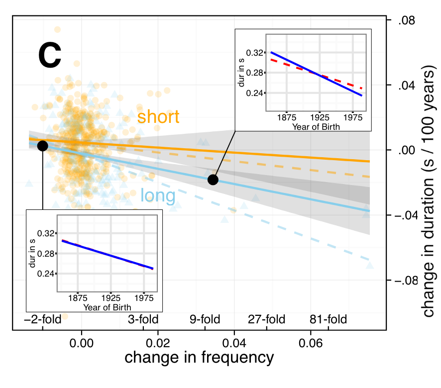
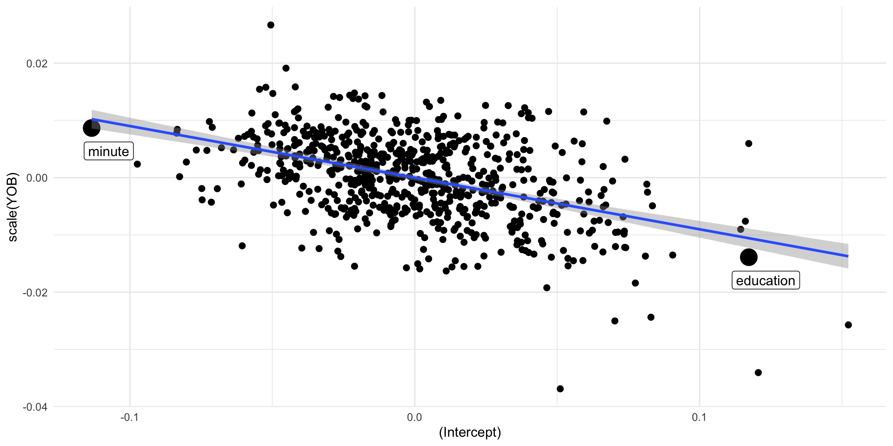
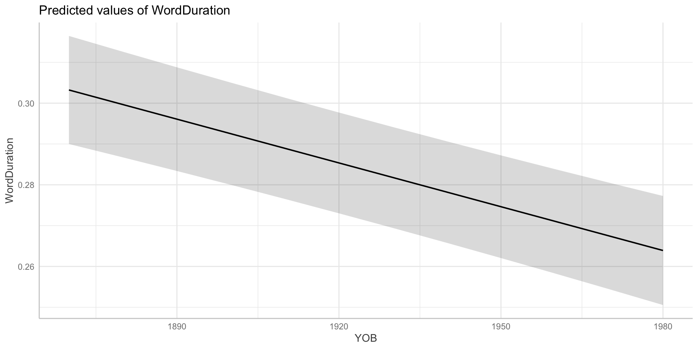
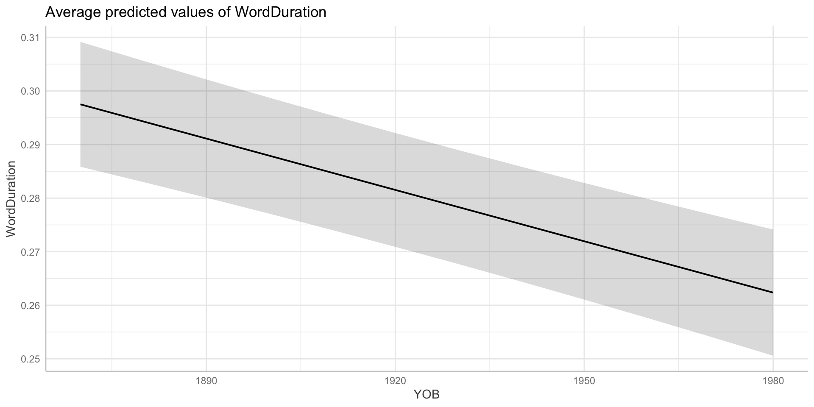
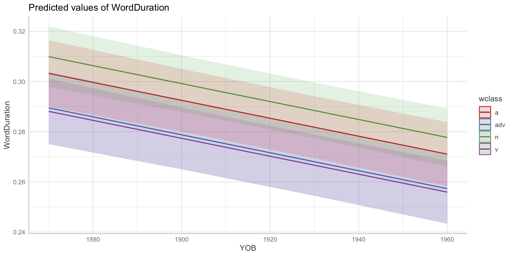
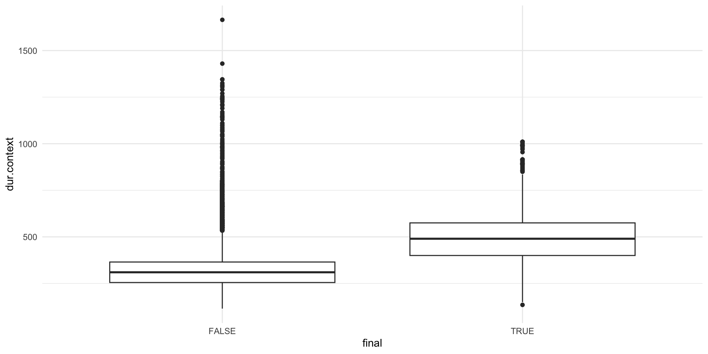
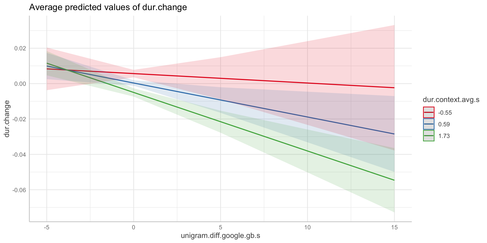
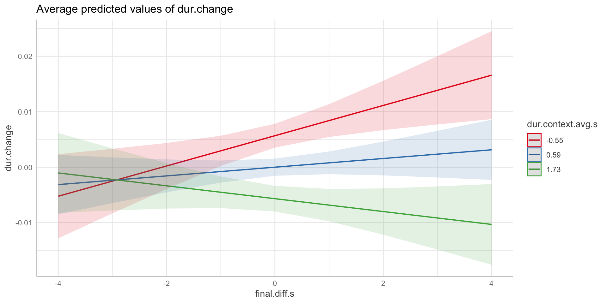
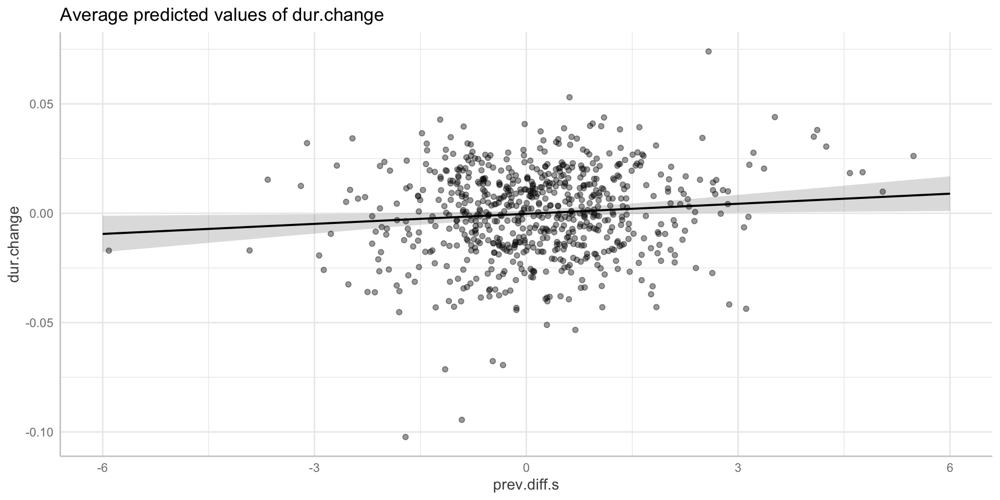

control_full <- lmer(
WordDuration ~ scale(YOB) +
# Duration controls
scale(dur.context) +
scale(seg.no) +
scale(syll.no) +
scale(syll.length.3) +
# Prosodic controls
final +
initial +
scale(final.prop.log) +
# Predictability controls
scale(prev_pred_wf_log) +
scale(foll_pred_wf_log) +
scale(prev_info_wf_avg) +
scale(foll_info_wf_avg) +
scale(unigram.google.gb) +
# Repetition controls
repeated.20 +
# Word class control
wclass +
# Random effects
(1 + scale(YOB) | TargetOrthography) +
(1 + scale(prev_info_wf_avg) + scale(foll_info_wf_avg) +
scale(final.prop.log) + scale(unigram.google.gb) || Speaker) +
(1 | Corpus),
data=big_dia,
REML=TRUE # changed to fit quickly.
)
# save the model
write_rds(
control_full,
here('models', 'control.rds'),
compress = "gz"
)Foundations
Session 7: A Big LMM
Joshua Wilson Black ![]()
Te Kāhui Roro Reo | New Zealand Institute of Language, Brain and Behaviour
Te Whare Wānanga o Waitaha | University of Canterbury
2025-07-31
Last Time
- What is a mixed effects model?
- Adding random effects to a linear model:
- Use of
lme4and thelmer()function - Random intercepts (
(1|group)) - Random intercepts and slopes (
(1 + variable|group))
- Use of
- Conditional vs. marginal predictions
This Time
- A complex real world example
- A Big LMM from (Sóskuthy and Hay 2017)
- Some lessons along with way:
- Extracting random effects
- More plotting hints
Real life example
Change in usage factors
- Our models with data from (Sóskuthy and Hay 2017) look at the relationship between usage factors and word duration.
- But what about change in usage factors.
- e.g.: if a word becomes more frequent does it also become shorter?
- e.g.: if a word is more frequently utterance final, does it become shorter everywhere?
- Models in the paper address this question.

- Change in frequency (\(x\) axis) leads to reduction in word duration (\(y\)).
- Colours: baseline duration of word.
- Points: raw data.
- Dashed lines in main panel: predictions from alternative model.
- Inserts: Duration reductions for word with given change in frequency.
Modelling strategies
- Two-stage model.
- Fit a model to control variation due to ‘things we want to ignore’,
- Extract random effects which capture variation of interest, fit a model to these.
- Single-stage model.
- Fit a model with both control variables and variables of interest.
- Lots of projects at NZILBB use something like (1).
‘Control Model’
Stage 1 (the ‘control model’)
😨
🧐
- Use of
scale()in formula (OK) - Note
||in random smooths - Save things which take ages
Summary (Fixed Effects)
Intercept represents duration (s) for an adjective which is not utterance final or initial and not repeated within 20 seconds, at average value of continuous predictors.
Strongest predictors are seg_no and syll.length.3, i.e., how many segments are in the word and average syllable duration. Long words are long! This is the kind of stuff which we want to control.
Yikes, finalTRUE has a negative estimate! Utterance final words are shorter now? This is, due to collinearity (more on this later).
Summary (Random Effects)
Random effects give us sd_ values (estimates of variation in the population).
We also get cor_ terms for correlation between intercepts and smooths. Let’s visualise what this means:
Correlation of intercept and slope
Correlation of intercept terms and slope terms for distinct words.
‘Minute’ has a low intercept. It is shorter than expected given fixed effects.
It also has a slope value 0.01 larger than average for year of birth. That is, it has a slope of -0.003. It changes less than other words over time.
“Education” is longer than expected (intercept), and has a steeper than expected slope. It changes more than other words.
The correlation means that words which are longer than expected change more over time.
What does the model say?
- Let’s look at some predictions.
- The
ggeffectspackage is an easy option. - We’ll use the
predict_response()function. - The default gives us a conditional prediction and tells us about the conditions it uses.
- These can take a while to generate for large models (like this one!)
Conditional Prediction
- Looking at
yob_conditionalwill tell you what values the prediction is for, incl. e.g.,dur.context = 328.77
Conditional Prediction

Marginal predictions
Marginal predictions

Multiple predictors
Multiple predictors

Exercise 1
- Download the control model (https://osf.io/q5wgh/)
- Put it in a directory called
modelsinside your project. - Load the model using
read_rds()(make sure you havelibrary(tidyverse)earlier in your script). - Find the variable names by looking at the model summary.
- Generate and plot a prediction
predict_response()andplot()from theggeffectspackage.
Exercise 1 (2)
Aside: Collinearity
- What if two variables give the ‘same’ information to the model?
- i.e., what if they are correlated?
- The model has nothing to choose between the two.
- Consequence: including highly correlated variables leads to unstable coefficients.
- … variable 1 might get a big coefficient, sometimes variable 2, sometimes both might get a moderate coefficient.
- In this model:
finalanddur.contextare correlated.
Aside: Collinearity (2)
Aside: Collinearity (2)

Aside: Collinearity (3)
- If we exclude
dur.context, then the coefficient forfinalhas a more sensible value.- … i.e. utterance final words are estimated to be longer.
- This is reported in the paper.
- This model passes a standard check for collinearity (the ‘variance inflation factor’). Just because you pass a test, doesn’t mean there isn’t a problem!
‘Treatment Model’
Extracting random effects
- Sometimes random effects capture the variation we care about.
- e.g. random effects for word include an intercept and slope.
- If we are interested in variation in the change in duration over time, the slopes capture what we are after.
- i.e. we want the bit of the model corresponding to
(1 + scale(YOB) | TargetOrthography).
- i.e. we want the bit of the model corresponding to
- As previously, use the
ranef()function.
From earlier
🙈🙉🙊
words <- word_effects |>
left_join(
big_dia |>
select(
word = TargetOrthography, contains('info'),
contains('diff'), 'dur.context.avg', 'unigram.google.gb',
'final.prop.log'
) |>
unique()
) |>
mutate(
# i.e. change in seconds over 100 years
dur.change = `scale(YOB)` * (100/sd(big_dia$YOB))
)
# Scale with respect to original data set (to compare with control model)
for (var in c("foll_info_wf_avg", "prev_info_wf_avg", "final.prop.log",
"foll.diff", "prev.diff", "final.diff", "unigram.google.gb",
"unigram.diff.google.gb", "dur.context.avg")) {
words[,paste(var, ".s", sep="")] <- (
(words[,var] - mean(as.numeric(big_dia[[var]]))) /
sd(as.numeric(big_dia[[var]]))
)
}The Treatment Model
This is a multiple linear regression not a mixed model. Why?
Note (var_1 + var_2) * var_3 syntax. Short for var_1 * var_3 + var_2 * var_3.
The Treatment Model
Plot predictions
Plot predictions

Plot predictions (2)
Plot predictions (2)

Plot predictions (3)
Plot predictions (3)

Upshot
Words that were increasing/decreasing in informativity (based on the previous contexts) showed a change in the same direction in duration (e.g. increasing informativity is associated with increasing duration). Long words that were becoming more frequent were also becoming shorter. Short words that were increasingly appearing utterance finally were also becoming longer. It is important to recall that the treatment model holds constant the local effects of the predictors. Thus, the results show – for example – that words that are increasing in utterance finality are also increasing in duration, even when the local position of each token is accounted for.
Exercise 2
- Extract the by-speaker random effects.
ranef(control_full)$???
- Make a plot using this data.
- e.g. histogram of by-speaker random intercepts.
- Extract the by-word effects (following slides) and fit the treatment model.
- Plot another prediction from the model.
Next Time
- Preregister a prediction about word duration in QuakeBox
- Run the analysis
- Write it up
References
Allaire, JJ, Yihui Xie, Christophe Dervieux, Jonathan McPherson, Javier Luraschi, Kevin Ushey, Aron Atkins, et al. 2024. rmarkdown: Dynamic Documents for r. https://github.com/rstudio/rmarkdown.
Bates, Douglas, Martin Mächler, Ben Bolker, and Steve Walker. 2015. “Fitting Linear Mixed-Effects Models Using lme4.” Journal of Statistical Software 67 (1): 1–48. https://doi.org/10.18637/jss.v067.i01.
Hester, Jim, and Jennifer Bryan. 2024. glue: Interpreted String Literals. https://CRAN.R-project.org/package=glue.
Müller, Kirill. 2020. here: A Simpler Way to Find Your Files. https://CRAN.R-project.org/package=here.
R Core Team. 2024. R: A Language and Environment for Statistical Computing. Vienna, Austria: R Foundation for Statistical Computing. https://www.R-project.org/.
Sarkar, Deepayan. 2008. Lattice: Multivariate Data Visualization with r. New York: Springer. http://lmdvr.r-forge.r-project.org.
Sóskuthy, Márton, and Jennifer Hay. 2017. “Changing Word Usage Predicts Changing Word Durations in New Zealand English.” Cognition 166 (September): 298–313. https://doi.org/10.1016/j.cognition.2017.05.032.
Wickham, Hadley, Mara Averick, Jennifer Bryan, Winston Chang, Lucy D’Agostino McGowan, Romain François, Garrett Grolemund, et al. 2019. “Welcome to the tidyverse.” Journal of Open Source Software 4 (43): 1686. https://doi.org/10.21105/joss.01686.
Xie, Yihui, J. J. Allaire, and Garrett Grolemund. 2018. R Markdown: The Definitive Guide. Boca Raton, Florida: Chapman; Hall/CRC. https://bookdown.org/yihui/rmarkdown.
Xie, Yihui, Christophe Dervieux, and Emily Riederer. 2020. R Markdown Cookbook. Boca Raton, Florida: Chapman; Hall/CRC. https://bookdown.org/yihui/rmarkdown-cookbook.